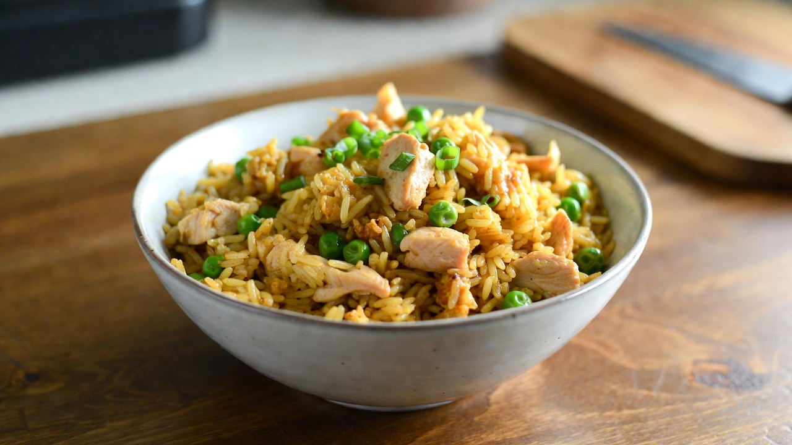

A Simple Chicken Fried Rice Recipe

Description
Chicken fried rice is a quick and flavorful dish made using cooked rice, tender chicken pieces, vegetables, soy sauce, and aromatic seasonings. It is commonly prepared in a wok on high heat, which helps give the rice a slightly smoky flavor and keeps the grains separate.
This dish is perfect for using leftover rice and can be customized with different vegetables or sauces. Chicken fried rice is enjoyed as a complete meal on its own or served as a side dish with other Asian-style dishes.
Ingredients
- Cooked Rice
- Chicken (boneless, chopped)
- Eggs
- Garlic (chopped)
- Onions
- Spring Onions
- Carrots
- Capsicum
- Soy Sauce
- Black Pepper
- Salt
- Oil
Steps
- Heat oil in a pan or wok and sauté garlic and onions until fragrant.
- Add chicken pieces and cook until fully done.
- Push chicken to one side, crack eggs into the pan, and scramble.
- Add chopped vegetables and stir-fry for 2–3 minutes.
- Add cooked rice and toss well.
- Season with soy sauce, salt, and black pepper.
- Mix well and cook on high heat for another 2 minutes.
- Garnish with spring onions and serve hot.
Home